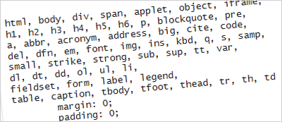

Scott Phillips is a web developer working at Drake University in Des Moines, Iowa.
The most frustrating part of learning cascading style sheets is getting consistent results across browsers. As you probably know, not every browser supports every rule in the same way (or at all).
Luckily, strategies have emerged that can help CSS newbies keep their sanity. The first is to write CSS so that it works in a browser that has solid support for CSS (like FireFox or Opera) and later tweak it, as needed, to work correctly in others (like IE6). Another strategy is to use a validator to find any simple syntax mistakes. These days, more and more developers are using a reset style sheet to cancel out pesky differences between browsers.
What’s the problem?
Even when you don’t use CSS in your web pages, you are still using CSS in your web pages. Huh? I’ll explain. Begin with the simplest page you can imagine:
<html>
<h1>Here is my title.</h1>
<p>Here is my paragraph.</p>
</html>
View it with several browsers and you’ll see subtle differences. The margins are off. The font sizes and weights are different. We’ve hardly begun and already our pixel-perfect design is breaking down!
Here is what’s happening. Every browser has built-in default styles. To see Firefox’s on Windows XP, for example, open the file C:\Program Files\Mozilla Firefox\res\html.css. You’ll find rules like this:
h1 {
display: block;
font-size: 2em;
font-weight: bold;
margin: .67em 0;
}
...
blockquote[type=cite] {
display: block;
margin: 1em 0px;
padding-left: 1em;
border-left: solid;
border-color: blue;
border-width: thin;
}
...
hr {
display: block;
height: 2px;
border: 1px -moz-bg-inset;
margin: 0.5em auto 0.5em auto;
}
The lesson is this. If you don’t express an opinion about how an element should look, the browser will substitute its own. We’ve already seen that browsers never agree. Furthermore, even if an element looks identical across browsers, you can’t assume it is actually being treated identically (i.e. one browser may use a default margin for the white space around a list while another uses padding). Make a seemingly small adjustment and suddenly they both change in different ways. What a mess.
What can we do?
Zero-out the default browser styles. Then replace them with your own. A very simple reset rule looks like this:
* {
margin: 0;
padding: 0;
}
That cancels out margin and padding for all elements on the page. From here you might want to continue by resetting font sizes and removing image borders:
html {
font-size: 1em;
}
body {
font-size: 100%;
}
:link img, :visited img {
border: 0;
}
It would also be handy to fix inconsistencies with lists and tables:
table {
border-collapse:collapse;
border-spacing:0;
}
ol,ul {
list-style:none;
}
Slap all that code into a file called reset.css and @import it at the top of every page. You are on your way to more consistent results and fewer debugging headaches.
Standing on the Shoulders of Giants
Our reset style sheet is simple but effective but it’s just the beginning. The universal selector (*) can occasionally cause issues of its own. And inheritance problems can also crop up as you continue to expand your reset style sheet.
Luckily, web pros like to share. Yahoo has released their own reset style sheet for us to use, called Reset CSS, as a part of the larger Yahoo User Interface (YUI) library. Eric Meyer, a full-fledged CSS Jedi, has also done a lot of work on a robust reset style sheet. Both are excellent, and I recommend studying and adopting either (or parts of both) of them into your own projects.
Pingback: Turulcsirip - Takács Dániel
So, now where i can download a pre-compiled “reset CSS”?
I’m not a web designer, i’m not able to write it by myself.
There has been quite a lot of discussion about reset stylesheets in the blogosphere this week, some in favour of them and some against, but mostly people saying that they don’t really care about browser defaults, and therefore don’t see a need to reset anything. I have dabbled with them and without them, but my current leaning is towards using a simple reset for some elements, or using a more comprehensive reset and removing certain elements from it.
For me, the jury is still out on reset stylesheets, but I am still pretty much a CSS newbie and I am sure I will chop and change on a per project basis
Mr. Kuzio, the reset sheet from Yahoo, as well as Eric Meyer’s reset is linked to in the last paragraph of the article above.
Oh, richard… thank you! XD
Sorry for the inconvenience.
Some good advice and links there, Scott. Thank you.
Personally I would not use the * {margin:0; padding:0;} solution. Considering that the majority of page elements don’t have margins or padding to begin with, it seems like using a sledgehammer to crack a nut. Besides, you’ll wind up adding back most margins and padding anyway, no?
My fave is Eric Meyer’s “Reset Reloaded” that you link to. As he notes in his article though, these are not intended to be used “as is.” He writes: “Think of these as a starting point for creating your own defaults.”
Pingback: NETTUTS - Web development tutorials and links - Best of the Web - April
Pingback: » Level the Playing Field with Reset Style Sheets Webcreatives
Until a few months back, I used to code without any resets, and then manually tweak and tune various defaults for compatibility.
Now-a-days, I use a reset which takes off most of the bugs (especially in IE), along with an IE6-specific stylesheet.
I have started looking at CSS frameworks and reset style sheets lately, and I have come to a basic conclusion.
Why reset? Set instead. Simply put, replace your reset style sheet with one that SETs all the basic styles to the defaults you would like to start from instead. You still get a good baseline across browsers by setting all your styles to a standard format. I just don’t see the point of doing something to force me to specifically undo it later. I would much rather start with a style sheet that has a reasonable starting point that overrides the differences between browsers while at the same time making elements appear as I would expect them to everywhere.
So how about we see the death of the reset style sheet and the birth of frameworks with set style sheets. I think I will work on creating my own set.css in the near future.
Pingback: Los estilos CSS por omisión de los navegadores y cómo resetearlos para controlarlos | voragine.net
You could also include:
html {
overflow-y: scroll;
To stop the nasty jump when you open up a page that is beyond the window limit…
I am a big fan of resets. It took me a while to get used to the various margins imported by various browsers, and I feel that it is incredibly useful.
I know this was an old post, but it was extremely useful that I had to post. Thank you very much for taking the time to post this!
Pingback: Best of the Web – April - IWCn Systems Inc. Official Blog